来源：https://fqlleg2dnfa.feishu.cn/docx/LmIFdYsDko7xOCx4HPqcUkSenMg
RPA是什么，这里就无需多言了，因为生财已经有非常多的相关普及贴，鱼丸还贴心除了RPA合集。
而且很多圈友也是在看了许多RPA精华帖之后，开始上手影刀，然后把自己的业务批量自动化提高了好多倍！
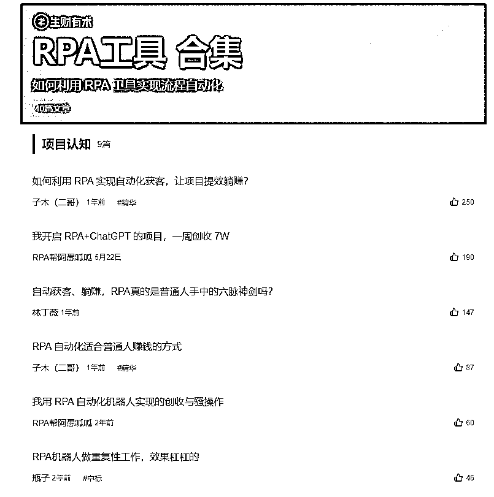
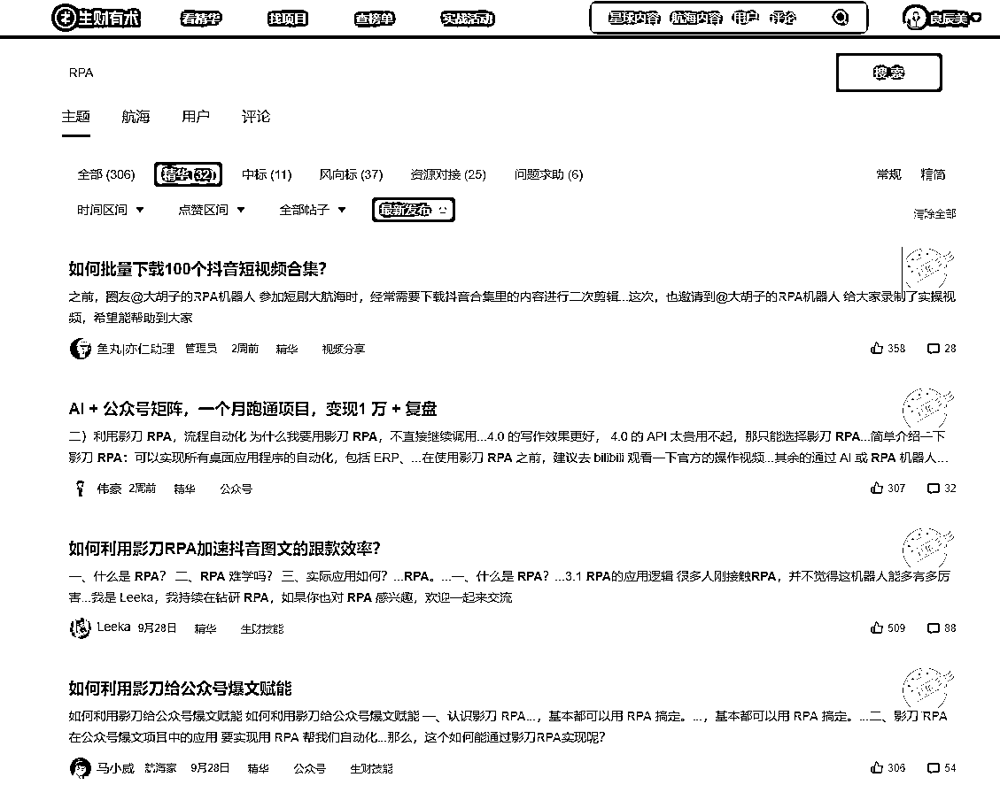
我这里稍微整理了所有可以提供RPA功能的工具，国外的居多尤其是小众产品，这个本质上就是低代码自动化，说白了就是把英文的代码，转换成可以拖拽的功能框和中文语句。
我做这个前后花了快十天时间，当然前期的工具测试花费时间居多，现在基本已经完全跑通自动化了。
一切都来源于上周亦仁所发的周报，我当时想着简单评论一下RPA或许也可以实现。
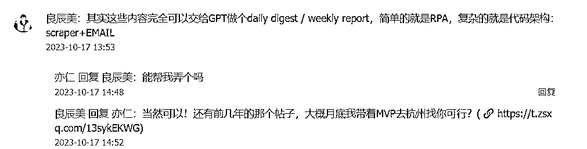
但事实上，当我真正开始着手的时候，我发现知识星球和生财有术的搜索引擎，全部都限制内容抓取。
所以我在第一步，批量获取帖子信息（标题和链接），就卡壳了三五天时间。
这其中我尝试了用Uibot（我最擅长却熟悉）和Automa（谷歌浏览器插件）
结果效果并不理想，用是能用，但是Uibot耗时长达一个小时，虽然可以做到完全自动化（甚至我把ChatGPT的prompt都调试了几十遍得出最终版）;然后那个谷歌插件Automa太薄弱了，我代码弄得过多，导致插件非常卡顿，当然速度也算是比较快，就是最后还得加入人工去发给ChatGPT（因为浏览器插件不如桌面软件那样可以完全控制本地文件）
仅仅是为了准确地获取每一个帖子的链接，我都花费了一整周的时间，因为知识星球和生财有术的网页版元素全部都做了反爬处理，我只能完全模拟人工去慢慢操作，于是RPA搞得又慢又卡（我总共弄了快两万行代码），而且还容易出错。（虽然最后文档版本的基本没问题了，但我感觉还是略有瑕疵。）
一直想着完蛋，这没办法交差了，难道是我技术不行？
本来我不想用影刀的，因为这个软件免费版本看不到代码，而且还没办法导出共享给其他电脑，所以我就一直觉得这是一个免费阉割版的RPA。
直到我发现了影刀的高级用法，爆款循环相似元素和模拟键盘点击（我以前一直以为影刀没这个功能），进而我还研究出如何查看影刀脚本的源代码，以及共享复制给其他账号其他电脑（出于可能侵犯影刀商业利益原因，这里就不公开阐述了），于是我发现影刀还是比较适合某些复杂多流程防反爬项目当中的。
这里非常感谢阿盛@邹培盛跟我关于影刀的用法交流。
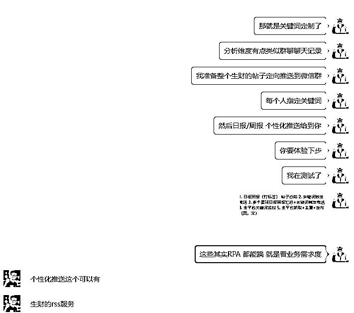
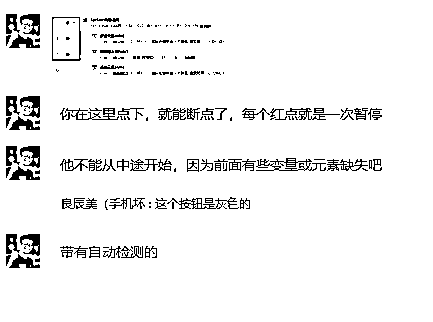
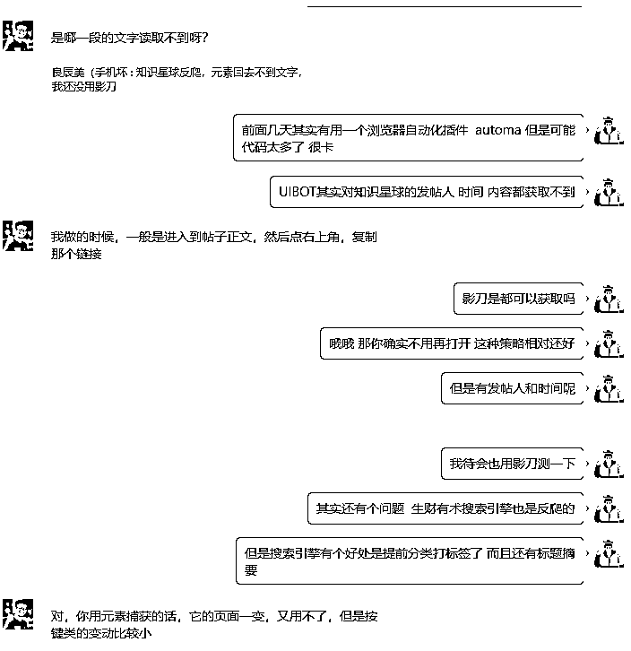
此处仅公开Uibot和Automa这两个的流程压缩包和插件安装包，因为两者都可以用于非商业用途公开分享。
(出于商业风险考虑，只展示影刀操作流程，暂不分享具体代码文件，关于影刀版本的成熟化解决方案，咱们可以私聊详细部署，看到的行内高手可能自己想就有方案了）
https://www.uibot.com.cn/
https://chat.openai.com/
https://search01.shengcaiyoushu.com/，https://wx.zsxq.com/dweb2/index/group/1824528822
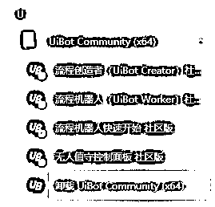
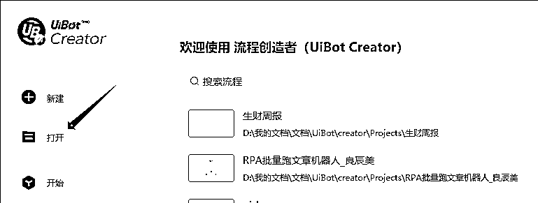
这里是Uibot社区版的机器人流程压缩包，请注意在安装后，一定要先根据自己的电脑做基础调试。（会RPA的就懂得都懂）
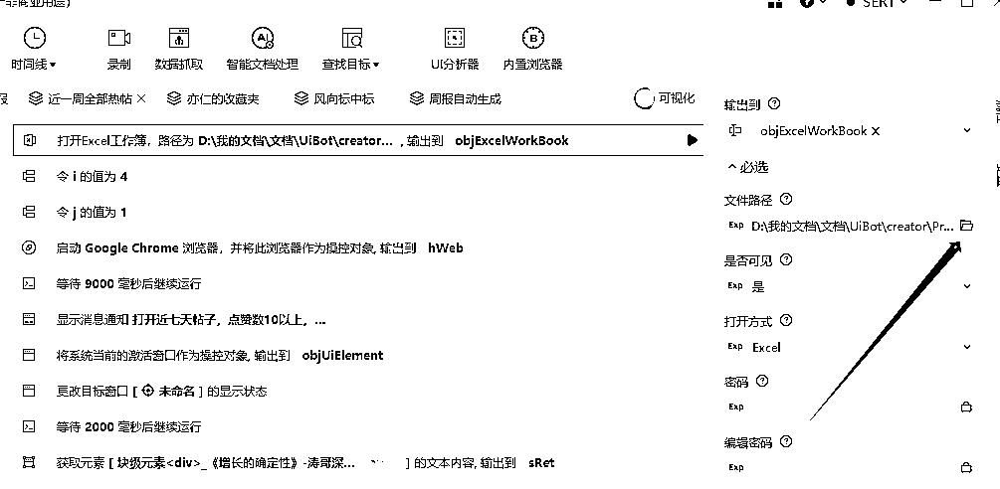
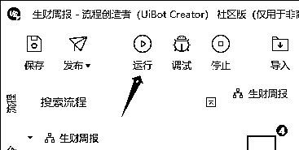
最简化是两个步骤，这是站在岸上看别人游泳时觉着的简单：不就两条腿往后蹬吗？
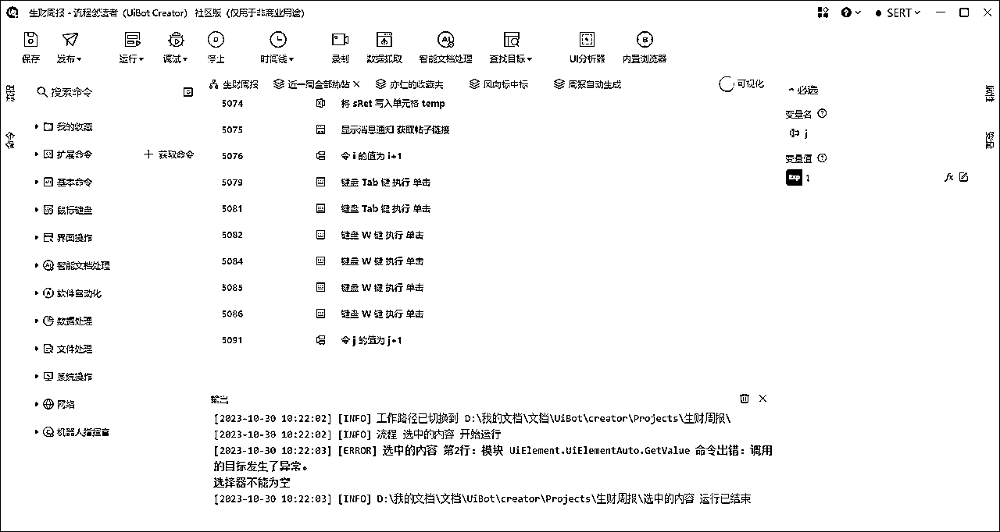
但真正执行起来,RPA快超过2W行代码，大概两千个步骤，因为要绕过帖子反爬，没办法运用循环简化。
这就是做起来，真感觉跟刚学游泳的时候一样，虽然我在岸上练习了标准动作很久（UIBOT我确实很熟，都可以闭眼写基本流程代码了），但是等下到水里面只感觉胸闷气短，两条腿有力气使不上劲，然后就老师呛水（真正项目市场，我反复测试了各种方法和方向，不算调试时间，方案就整了七八套去部署）
简单提一下，RPA的核心并不是代码，而是流程设计，速成你人工要怎么做的SOP，然后就需要交给机器人来完成，当然为了批量自动化的效率考量，这里面还有新的迭代升级，可能要借助一些插件什么的。
换句话说，两个都懂RPA的圈友，可能针对同一个项目，设计出来的是完全不同的流程（可能借用的工具也不同）
这个想法是我在看其他圈友设计公众号RPA批量自动化的思路冒出来的，跟我的确实大不相同。
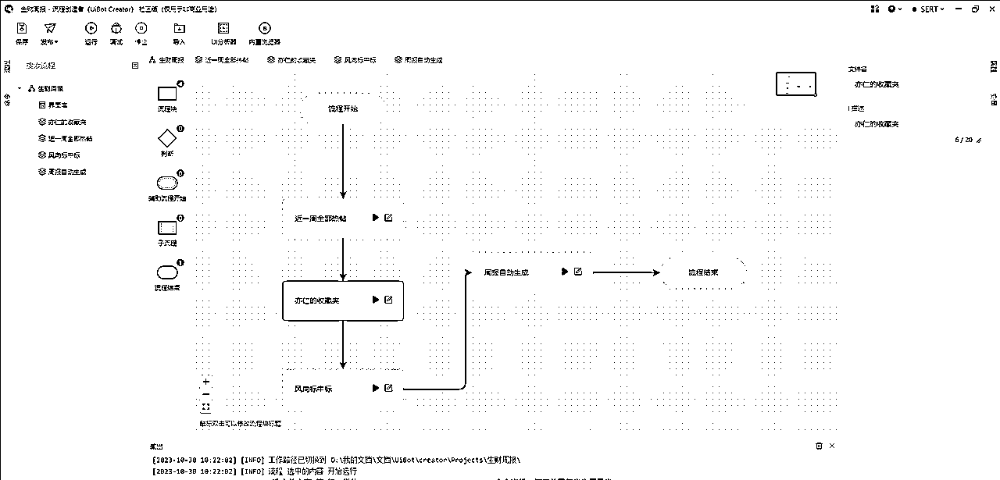
UIBOT因为缺乏影刀的相似元素循环获取，所以就导致代码比较多，影刀500行代码解决（内置二十次循环*8倍），Uibot是花了5091行代码解决（外置循环因为反爬用不了）。
当然也可能是我学艺不精，没徒手写自定义代码，或者说找到更高阶的用法，UIBOT我确实是花了三天部署，而影刀就只花了一天。（有效制作流程时间也就三个小时，剩下的就是调试，因为我写代码和流程总是考虑不周到，犯的很多错误就需要在测试中一点点纠正）。
本来以为操作非常简单，因为逻辑就两个步骤：获取帖子信息+发给ChatGPT
但是在第一步我卡了三天，因为生财有术搜索引擎和知识星球都没办法抓取帖子详细信息
RPA无法固定元素获取，我换了Automa浏览器自动化插件获取，但是元素太多非常容易卡顿
最后还是用Uibot完成，只能抓取三部分数据，比较多信息叠在一起
又导致ChatGPT没办法用正则表达式抽取详细信息
因此目前仅是一个粗略版本。
更新：所有问题已解决，只是代码比较多，最完美版本是VPS+RPA。我的方案是用腾讯云VPS，RPA机器人放在VPS里面，24H运行不用管，定制化发消息弄个单独微信即可。
https://chrome.google.com/webstore/detail/automa/infppggnoaenmfagbfknfkancpbljcca
（回看后发现要重点标注一下：这里是依托于生财有术搜索引擎的元素获取模块，当然本身是获取不到链接和太多数据的，只是尽可能模拟人工获取帖子链接【附带知识星球个人标识链接，所以还是得有付费会员才能查看】，同时如果生财有术搜索引擎的网页元素发生变化，该RPA可能失灵，这是为什么那么多工具应用都需要人工维护的原因，由于网页更新不定时，该贴的代码可能无效，但思路还是一样的）
以上RPA代码在具体的不同电脑环境中，可能还需要额外调试，花费时间取决于环境参数。
流程压缩包导入后要确认表格文件夹
目前流程是机器人自动打开所有网页和表格
机器人第一次打开生财有术搜索引擎网页时，有30s左右等待时间，可以人工调整筛选条件
因为RPA机器人的稳定性非常依赖运行所在电脑的环境，所以流程压缩包迁移电脑后，需要调试一下巩固稳定性
Uibot没有MAC版本，建议用WINDOWS系统或者腾讯云VPS
没有科学上网工具打不开CHATGPT，网络IP不稳定或者速度太慢会卡顿或者出错
3.3 影刀机器人注意事项
EXCEL文件要事先绑定
主题帖在sheet1，风向标在sheet2
开科学上网工具才能打开GPT
所有账号都要默认已登录
影刀切换页面用的是搜索引擎，关闭页面用的是zsxq，所以要关闭其他相似无关标签页
CHATGPT并不能完全准确得把文章分类，可能还需要加人工辅助判断，
同时增加更多的分类下的关键词命中（放在prompt当中）
【欢迎各位圈友提出更多意见！】
（一直想早点做出来成熟版，所以就用了三种工具测试，目前效果最好的是影刀，但是也耗费了很多时间，后面具体优化再看时间安排）
我想做这个，一开始是真觉得搞这个RPA流程应该挺简单的（我大意了！）
我为什么花这么多时间在这上面，因为我觉得不能表现出太差的RPA水平啊（居然连这都搞不定？）
我为什么还要做这些拓展思路延申的机器人，既然想到了，那就不如做到（其实在等有缘人交流哈哈）
目前据我所知，只有生财有术和淘金之路，这两个知识星球有在做自己的搜索引擎系统。
其他那么多知识星球，似乎都是人工统计做周报的。
诺，现在机器人来了，RPA+GPT：
完全可以部署自动定制化日报+定期周报，只需要星主最终删减即可
当然知识星球官方可能也会做这块，但是RPA的部署成本是非常低的
而且完全可以定制化，想怎么设计流程，都按想法来实现
如果有需求的可以找我，我对批量自动化还是蛮感兴趣的
https://www.yingdao.com/client-download/
https://chat.openai.com/
https://search01.shengcaiyoushu.com/，https://wx.zsxq.com/dweb2/index/group/1824528822
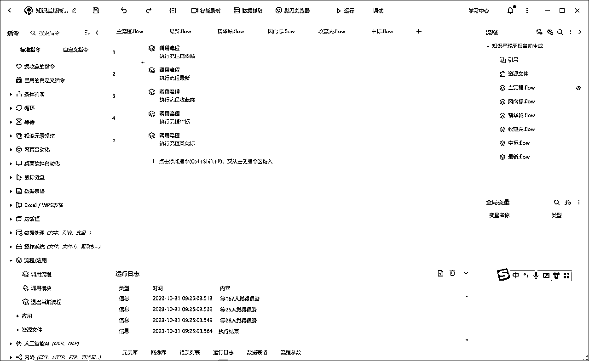
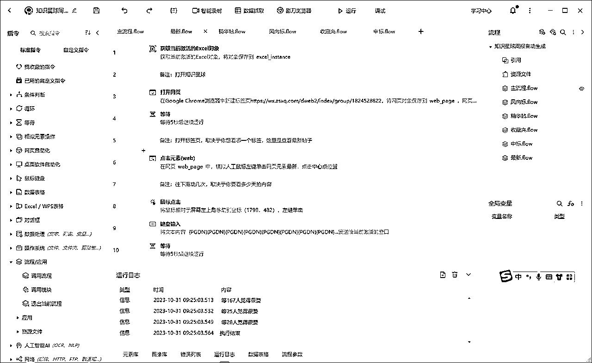
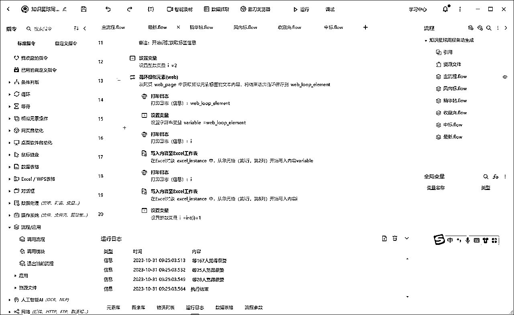
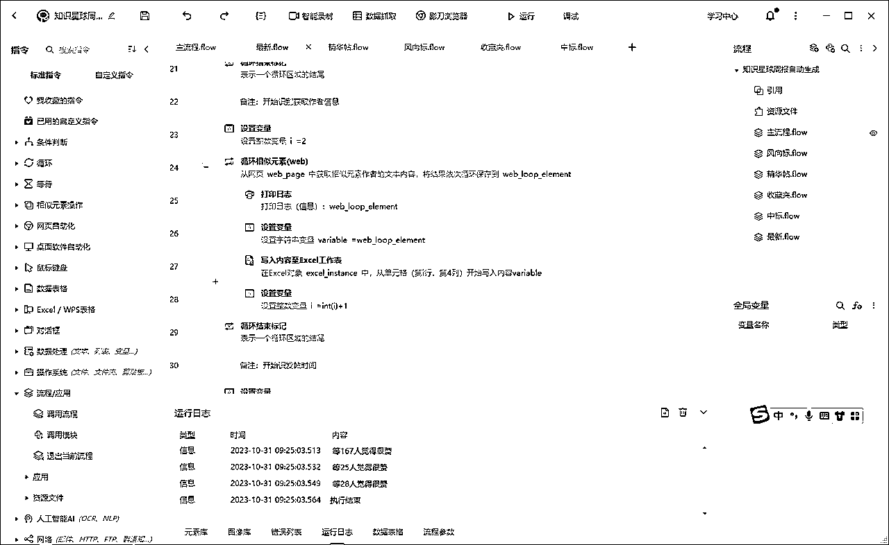
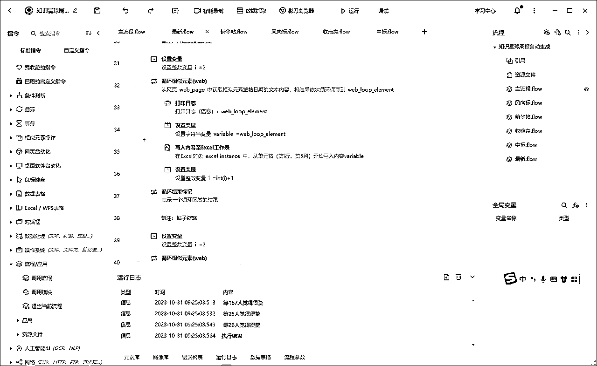
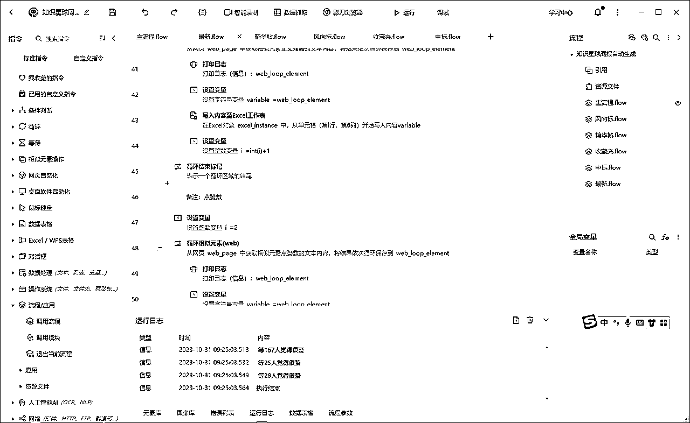
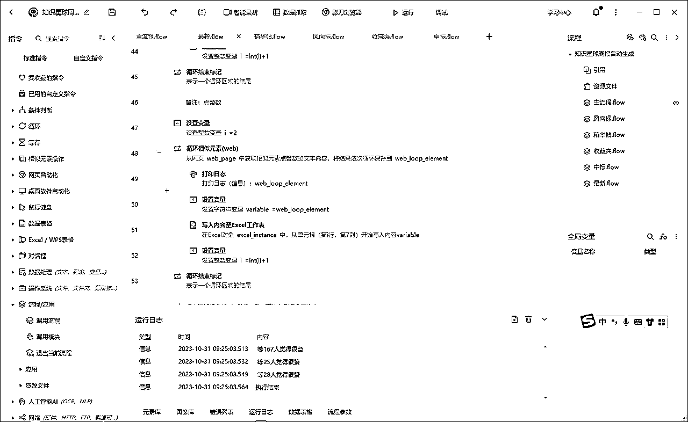
逻辑看起来非常简单，逐一循环获取相似元素（作者，发帖时间，文章更改，关键词标签，链接）
当然大部分文章都是在飞书等文档上，我们并不需要全部获取，只要概览即可
然后把内容发给GPT，可以通过文件上传（GPT4），也可以复制粘贴（有TOKEN限制）
其实用CLAUDE或者国产KIMI CHAT也都行
事实上当帖子没有被打上标签的时候，该元素就不存在
如果用UIBOT，这里可以当中空白
但是用影刀的相似循环元素，就直接略过了，会导致左右两列数据没有对齐
该流程利用谷歌浏览器，所以你电脑要安装
起始是绑定已有打开表格，所以不能关闭，且需要有已创建的五个Sheets
针对不同电脑可能要调整适配性
看圈友实操反馈
你干脆找我吧，省得配置一堆软件
我在想前期可以找一些圈友测试下
毕竟真实效果还不清楚
花钱卖服务，付费就是捡便宜
如果你也很感兴趣，也可以评论区交流
其实可实现的方式和可玩的路径非常多
甚至RPA只是最低级的配置，当然成本也最低
以上思路针对全平台都通用
以上思路用代码脚本化，API对接速度更快
同一个电脑调试稳定后就还好，如果切换电脑，可以要列出来需要调整的清单（增加微信账户）
不能太过频繁刷新和循环
如果人数过多，可能要分多个流程完成
在鱼丸发帖的RPA工具合集下方有圈友评论想要年入百万和年入千万的合集：
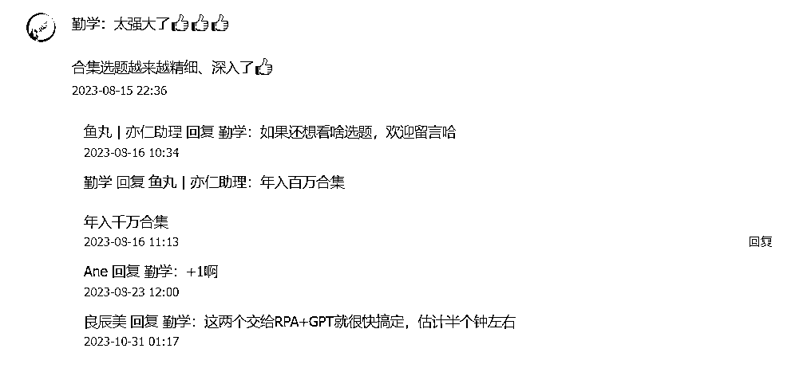
那么我们来简单测试一下，因为流程已经制作好了，接下来只是想要稍作调整即可：
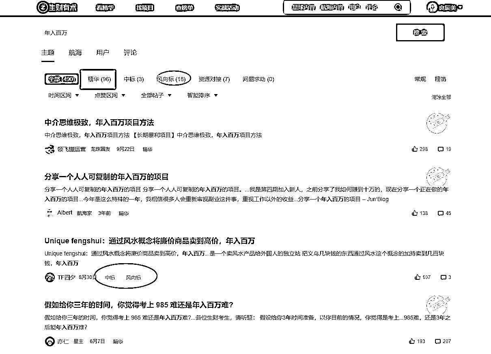
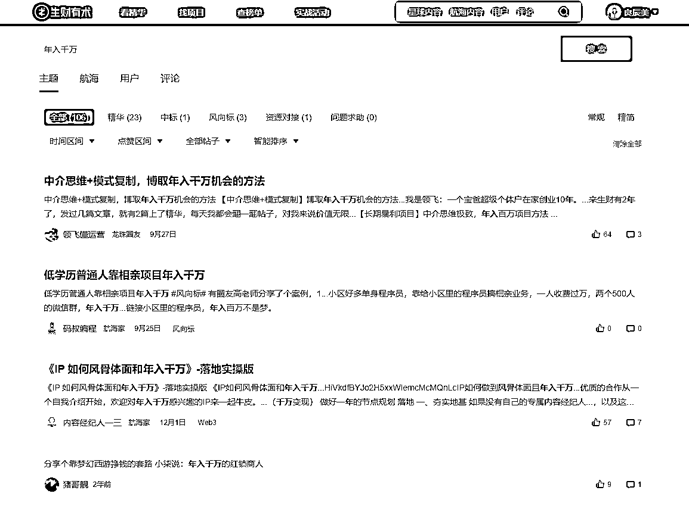
左边是年入百万的帖子，RPA全部抓下来，交给GPT分类即可，粗略来看精准度还挺高的（我们甚至可以精确分类风向标和主题帖）；右边是搜索年入千万的命中的帖子，但是相关性都不高，数量也少，交给GPT后可能还需要人工花点时间筛选。
当然你也可以更换关键词来获得更多命中帖子，比如赚一百万和赚一千万，读到这里有心的圈友可以自查一下，贴图到评论区，大家就可以看看区别。
（处理完发上来）
【同时可以交给GPT做新人QA百问百答】
后面我可能会陆续抓一些关键词下的生财精华帖，自动发给自己慢慢一天看几篇，只有标题+链接，所以还是要知识星球会员查看，别想歪了哈
亦仁
2017-05-09 12:46
#思路分享#
https://wx.zsxq.com/dweb2/index/topic_detail/15285125851282
如何找到一些好的操作思路？
主关键词：Amazon，blogging ,mobile affiliate，niche sites，Adsense，YouTube，Instagram，Whatsapp，淘宝客等
副关键词：Journey， follow along , income report，实战，记录等
搜索条件： 最近三个月，最近一年等
组合起来搜索就可以看到很多目前可以学习并且可操作的思路。
将搜索到的相关主题都看一遍，记录关键点，梳理一遍思路就可以开始操作了。
一遍操作一边遇到问题一边再重复上面的思路。
搜索挖掘能力可能是一个人需要拥有的最重要的能力之一。
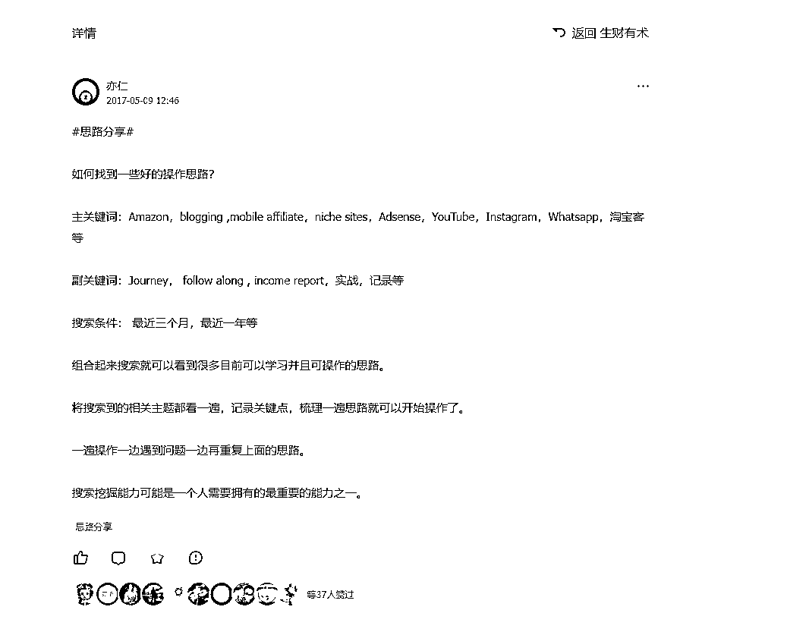
如果你感兴趣想做的话，那么看我的思路，你自己也可以直接搭建完成。
帖子上的信息和方法都是永久存在的，做完之后交流，可以再做思维碰撞。
由于这个机器人太过庞大，更换电脑肯定调试就很复杂，所以一直放在VPS就行
抓取的很多内容都是无效的，ChatGPT判断没那么精准，这个要更换其他GPT测试一下
可以更换甚至全部使用五大搜索引擎（谷歌，必应，搜狗，百度，DOGE）
可以新增关键词做列表，可以加入GPT做自动化筛选和判断
可以做成一个网站的形式，做RSS订阅服务
出于个人使用，我做了很多机器人，因为这个是完全可视化的汉字语言编程
而且就算出错了，也可以根据错误日志信息很快调试
完全不需要学习任何代码
具体代码可以看这篇精华帖
公众号爆文项目：批量公众号自动化发布文章和生成草稿 流程分享
https://wx.zsxq.com/mweb/views/topicdetail/topicdetail.html?topic_id=188525588245142
几个月前做美女号项目弄了份SOP
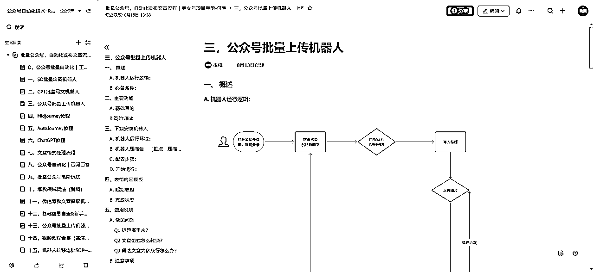
合作的项目，反正也是用RPA跑通的流程
生财也有很多这类帖子：
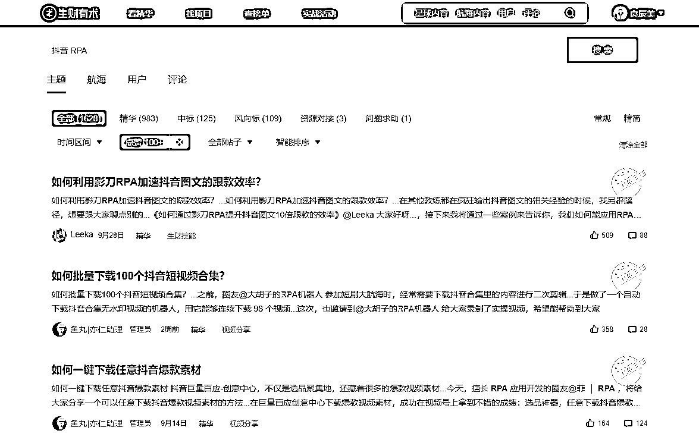
简单总结一下本篇文章，介绍和实操RPA能做的事情：
这里面代码和工具都不是核心，最顶层的是业务需求和逻辑设计。
我差不多花了十天实操，从晚上十一点开写这篇文章，一直到现在中午十二点多。
终于快完成了，还有一个篇章伍的小MVP没弄完，后续更新。（如果有圈友感兴趣订阅的话，可以免费体验，因为我也在测试当中）
以上，祝阅有所获。
更新1，其实还有生财合集市场和影刀的应用发版链接，这个晚点，还在抓取和做最终优化。
更新2，写得断断续续，凌晨还打瞌睡，可能有些语句不通顺和错别字，后面过几天我再通读一遍会修改下。
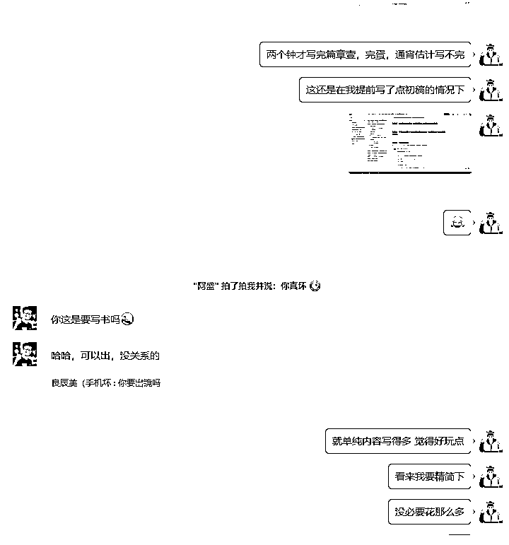